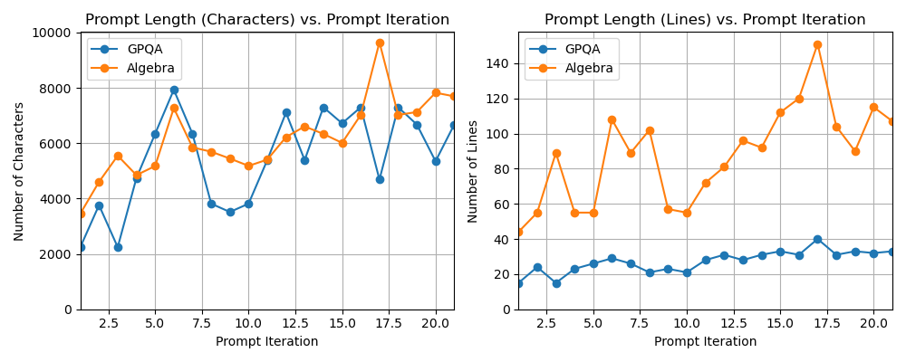
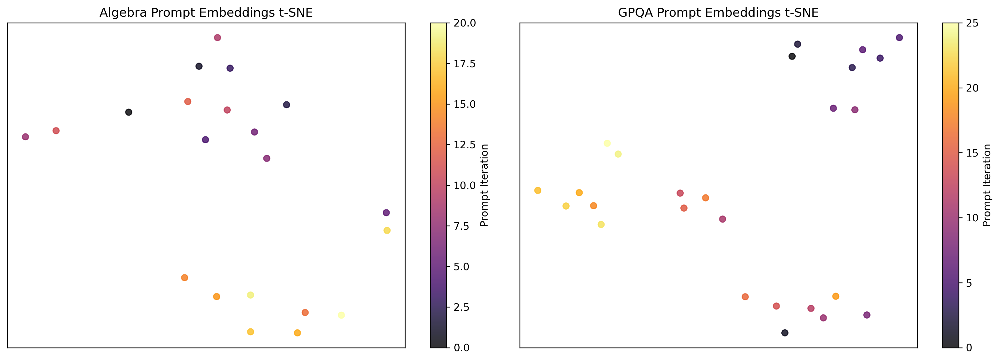

Uses Lean 4 with Mathlib to verify LLM-generated proofs of MiniF2F algebra problems during GEPA prompt optimization and evaluation.
Abstract
As Large Language Models (LLMs) achieve increasingly sophisticated performance on complex reasoning tasks, current architectures serve as critical proxies for the internal heuristics of frontier models. Characterizing emergent reasoning is vital for long-term interpretability and safety. Furthermore, understanding how prompting modulates these processes is essential, as natural language will likely be the primary interface for interacting with AGI systems. In this work, we use a custom variant of Genetic Pareto (GEPA) to systematically optimize prompts for scientific reasoning tasks, and analyze how prompting can affect reasoning behavior. We investigate the structural patterns and logical heuristics inherent in GEPA-optimized prompts, and evaluate their transferability and brittleness. Our findings reveal that gains in scientific reasoning often correspond to model-specific heuristics that fail to generalize across systems, which we call "local" logic. By framing prompt optimization as a tool for model interpretability, we argue that mapping these preferred reasoning structures for LLMs is an important prerequisite for effectively collaborating with superhuman intelligence.
Problem
It is unclear how prompting shapes LLM reasoning on scientific tasks, and whether optimized prompts transfer across models. The study examines this on formal theorem proving and graduate-level science questions.
Approach
A simplified custom variant of Genetic Pareto (GEPA) prompt optimization is run with DeepSeek-V3.2. Candidate prompts are scored by Lean verification of generated proofs for MiniF2F algebra theorems and by answer checking on GPQA Diamond. An LLM critic and an LLM evolver revise prompts based on failure logs. The resulting prompts are compared against hand-crafted baselines on GPT-5.4-mini, GLM 5, and Claude Sonnet 4.6.
Results
The GEPA-optimized final prompt reaches 100% on Algebra and 94.44% on GPQA with DeepSeek-V3.2, but its gains transfer poorly to other models. Hand-crafted chain-of-thought prompts sometimes do better on those models. Optimized prompts roughly double in length and drift in embedding space during optimization.

Figure 1: The length of GEPA proposed prompts increases over the course of optimization, with the final prompt often being about twice as long in characters as the initial prompt. This shows that detailed prompting is likely required to unlock better reasoning capabilities in LLMs.

Figure 2: The embeddings of GEPA proposed prompts tend to drift over the course of optimization. For both algebra and GPQA, there seems to be a significant jump in embedding space at around iteration 12. This suggests that for the same task, some regions of prompting space may offer more promising performance.
Model
CoT Algebra
CoT GPQA
GEPA Final Algebra
GEPA Final GPQA
DeepSeek-V3.2
97.22%
91.67%
100.00%
94.44%
GPT-5.4-mini
47.22%
91.67%
61.11%
91.67%
GLM 5
97.22%
86.11%
94.44%
91.67%
Claude Sonnet 4.6
52.78%
83.33%
50.00%
80.56%
Final GEPA prompt vs. Hand-Crafted CoT (Algebra / GPQA accuracy)